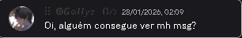

Foi no dia 28 de janeiro, às 2 da madrugada. Você mandou uma mensagem lá no PDA perguntando se alguém estava vendo suas mensagens, e eu, todo inocente, disse que estava. Então fui te ajudar. Mesmo eu não sendo muito de ajudar os outros, fui assim mesmo. Não sei explicar, mas senti alguma coisa dizendo que eu precisava falar com você. E lá fui eu, no seu PV, te ajudar a passar pelo verificador do Discord. Depois que deu certo, a gente começou a conversar normalmente. Eu achei que você era um cara gay, lembra? Hehe. Mas aí você me mandou aquela mensagem: "Eu nasci com bct moço 😭😭😭" Naquela hora eu fiquei todo bobo, porque jurava que estava falando com um mano. Depois disso, nossas conversas ficaram mais pessoais. A gente falou dos nossos gostos, das nossas relações passadas… e eu, todo inocente, falei que nunca tinha namorado. Então você veio com aquela pergunta que mudou tudo: "Se quer eu? Se tu querer eu te quero." Eu congelei. Fiquei totalmente incrédulo com o que estava lendo. Meu coração disparou, eu fiquei pensando… e então eu aceitei. E foi a melhor decisão da minha vida. Porque hoje eu sou o homem mais feliz do mundo quando estou com você. 💖

você lembra disso amor?
Hoje nós completamos 1 mês juntinhos, e eu quero te falar algumas coisinhas por essa carta. Amor, eu sou muito grato por tudo. Por todos os momentos que passo e ainda vou passar com você. Eu quero estar do seu lado em todos os momentos, desde os felizes até os tristes. Eu te amo muito, meu amor. Você é a luz da minha vida, é a razão da minha felicidade. Eu durmo e acordo pensando em você. A primeira coisa que eu faço quando acordo é pegar o celular para ver se tem mensagem sua. Eu sempre fico feliz quando vejo uma notificação e percebo que é você. Eu aprecio cada segundinho que passamos conversando, desde as conversas de amor até as do dia a dia — e claro, tem algumas safadezinhas aí também, hehe. Obrigado mesmo, meu docinho, por ter aparecido na minha vida. Eu quero te abraçar, te beijar, quero te dar o mundo. Esse nosso primeiro mês me fez sentir especial e amado. Eu espero que eu tenha feito você sentir a mesma coisa. Um dia eu vou aí te ver, mas por enquanto ficaremos apenas por mensagem. Porém, isso não vai impedir nosso amor de crescer cada dia mais. A distância é só a primeira prova de que o nosso amor é forte, é eterno e vai prosperar para sempre. E um dia, meu amor, iremos morar juntinhos, ter uma família e vamos olhar para trás e ver cada momento que passamos juntos, desde os mais difíceis até os mais felizes. Pode contar comigo para tudo, meu amor. Eu te amo muito, mais do que eu consigo escrever nessa carta. 💖
Oiii, Tete. Aqui é o Dada 💕 Então, Tete, o Dada quer falar umas coisinhas pra você. Tete, o Dada te ama muitão. Eu amo cuidar de você, te fazer rir e fazer RPG com você. Eu gosto muito de te fazer companhia e de brincar com você. O Dada quer estar com o Tete em todos os momentos, até quando o Tete ficar adulto. Sempre que o Tete precisar, é só mandar mensagem pro Dada… menos de madrugada, né Tete? Porque o Dada vai estar dormindo 😴 hehe. Mas tirando isso, pode contar com o Dada pra tudo. Pra assistir desenho, desenhar, às vezes dormir em call, conversar… qualquer coisa é só pedir pro Dada. Eu vou sempre fazer o máximo por você e estar do seu lado sempre que precisar. O Dada sempre quer fazer carinho, beijar, até dar papá pro Tete… e um dia isso vai acontecer, hihi 🤭 O Dada te ama muito, Tete. Beijos :3 💖
Bom, a partir do momento em que você disse o primeiro “eu te amo”, eu soube que era você. Mesmo depois de ter descoberto sua idade de verdade, eu confesso que fiquei um pouco estranho, porque são cinco anos de diferença. Mas quando você me confortou nos momentos difíceis, eu percebi que não precisava ligar para isso, porque o que realmente importa é o amor que sentimos um pelo outro. Foi então que eu entendi que eu te amava de verdade, e continuo te amando cada vez mais, todos os dias. Até o fim da minha vida, eu quero te amar. Quero te amar para todo o sempre. 💖